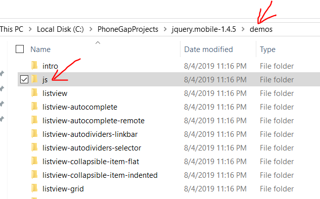
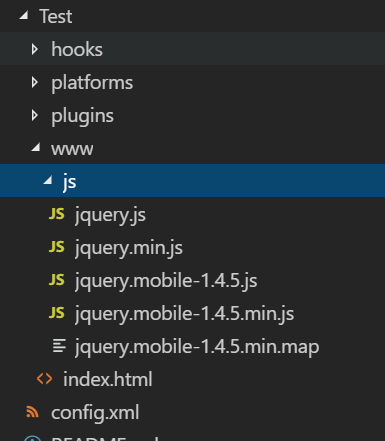
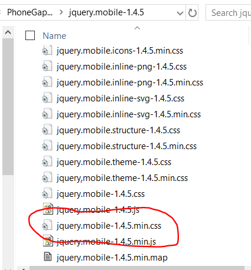
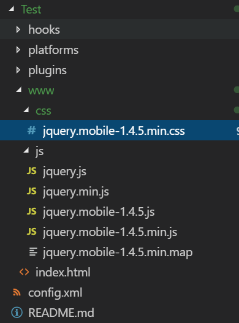
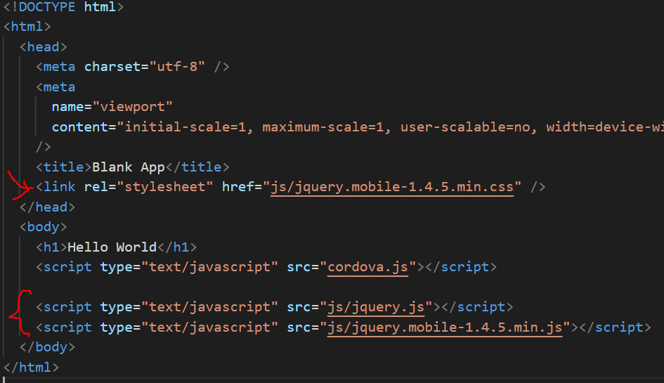

Go to jquerymobile.com and click on the Download button. Then unzip the zip file. At time of writing it is jquery.mobile-1.4.5.zip. After unzipping it, copy the js folder and put it into the www folder of your project.

This is what your project folder looks like after copying js folder into the www folder:
Next create a css folder inside www. And copy the file jquery.mobile-1.4.5.min.css to it. You can get the file from the unzipped folder of jquery mobile. It is located in the root directory:

And this is what your project folder looks like after creating the css folder and copying jquery.mobile-1.4.5.min.css into it.

Next, you need to refer to the libraries in the js folder from within the index.html file by adding the following lines indicated in red:

Next, save the index.html file and refresh your chrome emulator and you will now see a nicely styled message: